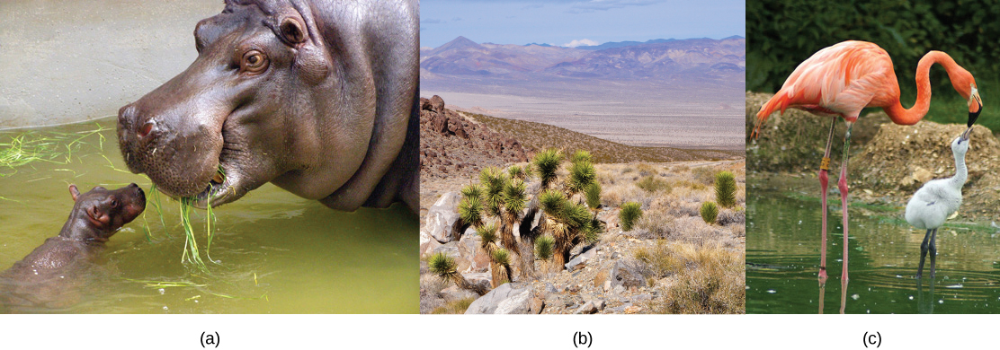
The ability to reproduce in kind is a basic characteristic of all living things. In kind means that the offspring of any organism closely resembles its parent or parents. Hippopotamuses give birth to hippopotamus calves; Monterey pine trees produce seeds from which Monterey pine seedlings emerge; and adult flamingos lay eggs that hatch into flamingo chicks. In kind does not generally mean exactly the same. While many single-celled organisms and a few multicellular organisms can produce genetically identical clones of themselves through mitotic cell division, many single-celled organisms and most multicellular organisms reproduce regularly using another method.
Note that, in genetics, "parent" is often used to describe the individual organism(s) that contribute genetic material to an offspring, usually in the form of gamete cells. The concept of a genetic parent is distinct from social and legal concepts of parenthood, and may differ from those whom people consider their parents. Even within the animal kingdom, characteristics that may often be associated with sexual reproduction, such as parental care or sexual behavior, are not universal.
Sexual reproduction is the production of haploid cells and the fusion of a haploid cell from each genetic parent to form a single, unique diploid cell. In multicellular organisms, the new diploid cell will then undergo mitotic cell divisions to develop into an adult organism. A type of cell division called meiosis leads to the haploid cells that are part of the sexual reproductive cycle. Sexual reproduction, specifically meiosis and fertilization, introduces variation into offspring that may account for the evolutionary success of sexual reproduction. The vast majority of eukaryotic organisms can or must employ some form of meiosis and fertilization to reproduce.
- Explain the potential evolutionary advantage of variation produced by sexual reproduction
- Describe three life-cycle strategies among sexual organisms and their commonalities
- Describe the behavior of chromosomes during meiosis
- Explain the differences between meiosis and mitosis
- Explain the mechanisms of nondisjunction and structural chromosome errors
| # | Lesson | Key Concepts | Source |
|---|---|---|---|
| 1 | Sexual Reproduction | Variation advantage, Red Queen hypothesis, diploid-dominant, haploid-dominant, alternation of generations | CB 7.1 |
| 2 | Meiosis I | Ploidy, synapsis, crossing over, chiasmata, independent assortment, prophase I through telophase I | CB 7.2 |
| 3 | Meiosis II & Comparison | Meiosis II stages, comparison of meiosis and mitosis | CB 7.2 |
| 4 | Variations in Meiosis | Nondisjunction, aneuploidy, polyploidy, chromosome structural rearrangements | CB 7.3 |
| 5 | Practice Test | All topics — comprehensive assessment | All |
| Standard | Description | Lessons |
|---|---|---|
| BIO.5a | Meiosis and the formation of gametes | 2, 3 |
| BIO.5c | Genetic variation through sexual reproduction | 1, 2, 4 |
- Explain that variation among offspring is a potential evolutionary advantage of sexual reproduction
- Describe three different life-cycle strategies among sexual organisms and their commonalities
Sexual reproduction was an early evolutionary innovation after the appearance of eukaryotic cells. The fact that most eukaryotes reproduce sexually is evidence of its evolutionary success. In many animals, it is the only mode of reproduction. And yet, scientists recognize some real disadvantages to sexual reproduction. On the surface, offspring that are genetically identical to the parent may appear to be more advantageous. If the parent organism is successfully occupying a habitat, offspring with the same traits would be similarly successful. There is also the obvious benefit to an organism that can produce offspring by asexual budding, fragmentation, or asexual eggs. These methods of reproduction do not require another organism of the opposite sex. There is no need to expend energy finding or attracting a mate. That energy can be spent on producing more offspring. Indeed, some organisms that lead a solitary lifestyle have retained the ability to reproduce asexually. In addition, asexual populations only have female individuals, so every individual is capable of reproduction. In contrast, the males in sexual populations (half the population) are not producing offspring themselves. Because of this, an asexual population can grow twice as fast as a sexual population in theory. This means that in competition, the asexual population would have the advantage. All of these advantages to asexual reproduction, which are also disadvantages to sexual reproduction, should mean that the number of species with asexual reproduction should be more common.
However, multicellular organisms that exclusively depend on asexual reproduction are exceedingly rare. Why is sexual reproduction so common? This is one of the important questions in biology and has been the focus of much research from the latter half of the twentieth century until now. A likely explanation is that the variation that sexual reproduction creates among offspring is very important to the survival and reproduction of those offspring. The only source of variation in asexual organisms is mutation. This is the ultimate source of variation in sexual organisms. In addition, those different mutations are continually reshuffled from one generation to the next when different parents combine their unique genomes, and the genes are mixed into different combinations by the process of meiosis. Meiosis is the division of the contents of the nucleus that divides the chromosomes among gametes. Variation is introduced during meiosis, as well as when the gametes combine in fertilization.
There is no question that sexual reproduction provides evolutionary advantages to organisms that employ this mechanism to produce offspring. The problematic question is why, even in the face of fairly stable conditions, sexual reproduction persists when it is more difficult and produces fewer offspring for individual organisms? Variation is the outcome of sexual reproduction, but why are ongoing variations necessary? Enter the Red Queen hypothesis, first proposed by Leigh Van Valen in 1973. The concept was named in reference to the Red Queen's race in Lewis Carroll's book, Through the Looking-Glass, in which the Red Queen says one must run at full speed just to stay where one is.
All species coevolve with other organisms. For example, predators coevolve with their prey, and parasites coevolve with their hosts. A remarkable example of coevolution between predators and their prey is the unique coadaptation of night flying bats and their moth prey. Bats find their prey by emitting high-pitched clicks, but moths have evolved simple ears to hear these clicks so they can avoid the bats. The moths have also adapted behaviors, such as flying away from the bat when they first hear it, or dropping suddenly to the ground when the bat is upon them. Bats have evolved "quiet" clicks in an attempt to evade the moth's hearing. Some moths have evolved the ability to respond to the bats' clicks with their own clicks as a strategy to confuse the bats echolocation abilities.
Each tiny advantage gained by favorable variation gives a species an edge over close competitors, predators, parasites, or even prey. The only method that will allow a coevolving species to keep its own share of the resources is also to continually improve its ability to survive and produce offspring. As one species gains an advantage, other species must also develop an advantage or they will be outcompeted. No single species progresses too far ahead because genetic variation among progeny of sexual reproduction provides all species with a mechanism to produce adapted individuals. Species whose individuals cannot keep up become extinct. The Red Queen's catchphrase was, "It takes all the running you can do to stay in the same place." This is an apt description of coevolution between competing species.
Fertilization and meiosis alternate in sexual life cycles. What happens between these two events depends on the organism. The process of meiosis reduces the resulting gamete's chromosome number by half. Fertilization, the joining of two haploid gametes, restores the diploid condition. There are three main categories of life cycles in multicellular organisms: diploid-dominant, in which the multicellular diploid stage is the most obvious life stage (and there is no multicellular haploid stage), as with most animals including humans; haploid-dominant, in which the multicellular haploid stage is the most obvious life stage (and there is no multicellular diploid stage), as with all fungi and some algae; and alternation of generations, in which the two stages, haploid and diploid, are apparent to one degree or another depending on the group, as with plants and some algae.
Nearly all animals employ a diploid-dominant life-cycle strategy in which the only haploid cells produced by the organism are the gametes. The gametes are produced from diploid germ cells, a special cell line that only produces gametes. Once the haploid gametes are formed, they lose the ability to divide again. There is no multicellular haploid life stage. Fertilization occurs with the fusion of two gametes, usually from different individuals, restoring the diploid state (Figure 7.2a).
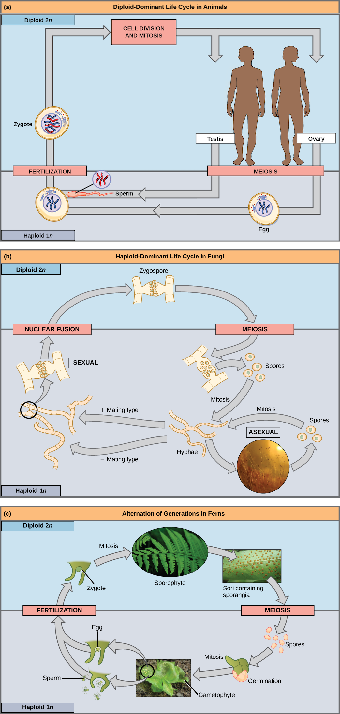
Show Answer
Yes, it could still reproduce asexually through spore formation. However, it would not be able to reproduce sexually because sexual reproduction in fungi requires the fusion of plus and minus mating types.
Most fungi and algae employ a life-cycle strategy in which the multicellular "body" of the organism is haploid. During sexual reproduction, specialized haploid cells from two individuals join to form a diploid zygote. The zygote immediately undergoes meiosis to form four haploid cells called spores (Figure 7.2b).
The third life-cycle type, employed by some algae and all plants, is called alternation of generations. These species have both haploid and diploid multicellular organisms as part of their life cycle. The haploid multicellular plants are called gametophytes because they produce gametes. Meiosis is not involved in the production of gametes in this case, as the organism that produces gametes is already haploid. Fertilization between the gametes forms a diploid zygote. The zygote will undergo many rounds of mitosis and give rise to a diploid multicellular plant called a sporophyte. Specialized cells of the sporophyte will undergo meiosis and produce haploid spores. The spores will develop into the gametophytes (Figure 7.2c).
Explain the Red Queen hypothesis and how it supports the advantage of sexual reproduction over asexual reproduction.
- Describe the behavior of chromosomes during meiosis
- Describe cellular events during meiosis
- Explain the mechanisms that generate genetic variation during meiosis
Sexual reproduction requires fertilization, a union of two cells from two individual organisms. If those two cells each contain one set of chromosomes, then the resulting cell contains two sets of chromosomes. The number of sets of chromosomes in a cell is called its ploidy level. Haploid cells contain one set of chromosomes. Cells containing two sets of chromosomes are called diploid. If the reproductive cycle is to continue, the diploid cell must somehow reduce its number of chromosome sets before fertilization can occur again, or there will be a continual doubling in the number of chromosome sets in every generation. So, in addition to fertilization, sexual reproduction includes a nuclear division, known as meiosis, that reduces the number of chromosome sets.
Most animals and plants are diploid, containing two sets of chromosomes; in each somatic cell (the nonreproductive cells of a multicellular organism), the nucleus contains two copies of each chromosome that are referred to as homologous chromosomes. Somatic cells are sometimes referred to as "body" cells. Homologous chromosomes are matched pairs containing genes for the same traits in identical locations along their length. Diploid organisms inherit one copy of each homologous chromosome from each parent; all together, they are considered a full set of chromosomes. In animals, haploid cells containing a single copy of each homologous chromosome are found only within gametes. Gametes fuse with another haploid gamete to produce a diploid cell.
The nuclear division that forms haploid cells, which is called meiosis, is related to mitosis. As you have learned, mitosis is part of a cell reproduction cycle that results in identical daughter nuclei that are also genetically identical to the original parent nucleus. In mitosis, both the parent and the daughter nuclei contain the same number of chromosome sets—diploid for most plants and animals. Meiosis employs many of the same mechanisms as mitosis. However, the starting nucleus is always diploid and the nuclei that result at the end of a meiotic cell division are haploid. To achieve the reduction in chromosome number, meiosis consists of one round of chromosome duplication and two rounds of nuclear division. Because the events that occur during each of the division stages are analogous to the events of mitosis, the same stage names are assigned. However, because there are two rounds of division, the stages are designated with a "I" or "II." Thus, meiosis I is the first round of meiotic division and consists of prophase I, prometaphase I, and so on. Meiosis I reduces the number of chromosome sets from two to one. The genetic information is also mixed during this division to create unique recombinant chromosomes. Meiosis II, in which the second round of meiotic division takes place in a way that is similar to mitosis, includes prophase II, prometaphase II, and so on.
Meiosis is preceded by an interphase consisting of the G1, S, and G2 phases, which are nearly identical to the phases preceding mitosis. The G1 phase is the first phase of interphase and is focused on cell growth. In the S phase, the DNA of the chromosomes is replicated. Finally, in the G2 phase, the cell undergoes the final preparations for meiosis.
During DNA duplication of the S phase, each chromosome becomes composed of two identical copies (called sister chromatids) that are held together at the centromere until they are pulled apart during meiosis II. In an animal cell, the centrosomes that organize the microtubules of the meiotic spindle also replicate. This prepares the cell for the first meiotic phase.
Early in prophase I, the chromosomes can be seen clearly microscopically. As the nuclear envelope begins to break down, the proteins associated with homologous chromosomes bring the pair close to each other. The tight pairing of the homologous chromosomes is called synapsis. In synapsis, the genes on the chromatids of the homologous chromosomes are precisely aligned with each other. An exchange of chromosome segments between non-sister homologous chromatids occurs and is called crossing over. This process is revealed visually after the exchange as chiasmata (singular = chiasma) (Figure 7.3).
As prophase I progresses, the close association between homologous chromosomes begins to break down, and the chromosomes continue to condense, although the homologous chromosomes remain attached to each other at chiasmata. The number of chiasmata varies with the species and the length of the chromosome. At the end of prophase I, the pairs are held together only at chiasmata (Figure 7.3) and are called tetrads because the four sister chromatids of each pair of homologous chromosomes are now visible.
The crossover events are the first source of genetic variation produced by meiosis. A single crossover event between homologous non-sister chromatids leads to a reciprocal exchange of equivalent DNA between a maternal chromosome and a paternal chromosome. Now, when that sister chromatid is moved into a gamete, it will carry some DNA from one parent of the individual and some DNA from the other parent. The recombinant sister chromatid has a combination of maternal and paternal genes that did not exist before the crossover.
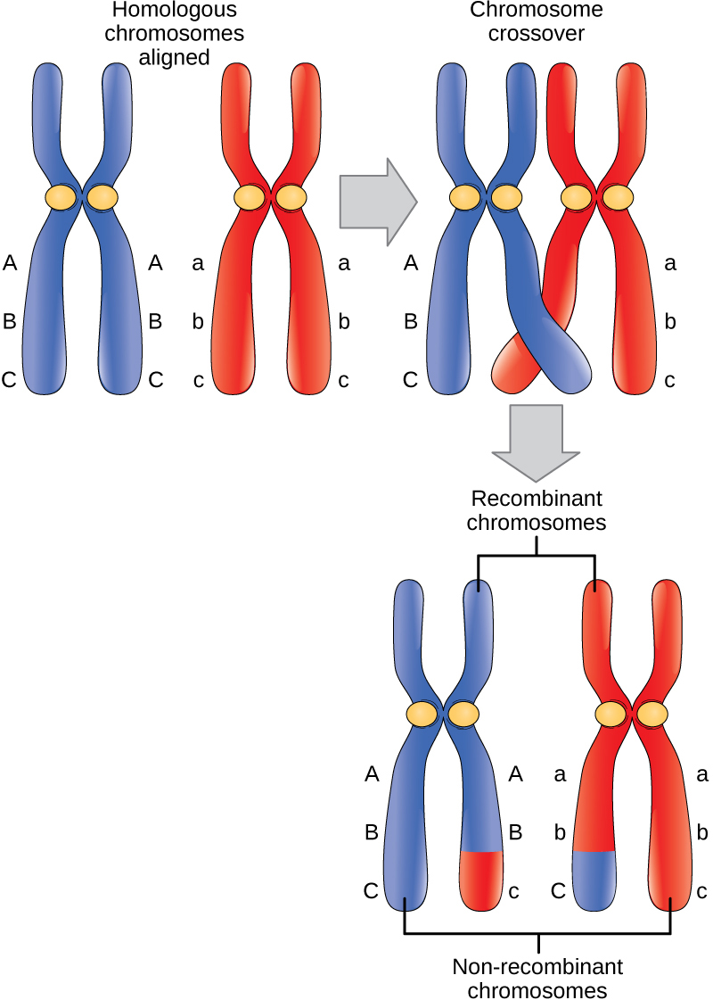
The key event in prometaphase I is the attachment of the spindle fiber microtubules to the kinetochore proteins at the centromeres. The microtubules assembled from centrosomes at opposite poles of the cell grow toward the middle of the cell. At the end of prometaphase I, each tetrad is attached to microtubules from both poles, with one homologous chromosome attached at one pole and the other homologous chromosome attached to the other pole. The homologous chromosomes are still held together at chiasmata. In addition, the nuclear membrane has broken down entirely.
During metaphase I, the homologous chromosomes are arranged in the center of the cell with the kinetochores facing opposite poles. The orientation of each pair of homologous chromosomes at the center of the cell is random. This randomness, called independent assortment, is the physical basis for the generation of the second form of genetic variation in offspring. Consider that the homologous chromosomes of a sexually reproducing organism are originally inherited as two separate sets, one from each parent. Using humans as an example, one set of 23 chromosomes is present in the egg donated by the mother. The father provides the other set of 23 chromosomes in the sperm that fertilizes the egg. In metaphase I, these pairs line up at the midway point between the two poles of the cell. Because there is an equal chance that a microtubule fiber will encounter a maternally or paternally inherited chromosome, the arrangement of the tetrads at the metaphase plate is random. Any maternally inherited chromosome may face either pole. Any paternally inherited chromosome may also face either pole. The orientation of each tetrad is independent of the orientation of the other 22 tetrads.
In each cell that undergoes meiosis, the arrangement of the tetrads is different. The number of variations depends on the number of chromosomes making up a set. There are two possibilities for orientation (for each tetrad); thus, the possible number of alignments equals 2n where n is the number of chromosomes per set. Humans have 23 chromosome pairs, which results in over eight million (223) possibilities. This number does not include the variability previously created in the sister chromatids by crossover. Given these two mechanisms, it is highly unlikely that any two haploid cells resulting from meiosis will have the same genetic composition (Figure 7.4).
To summarize the genetic consequences of meiosis I: the maternal and paternal genes are recombined by crossover events occurring on each homologous pair during prophase I; in addition, the random assortment of tetrads at metaphase produces a unique combination of maternal and paternal chromosomes that will make their way into the gametes.
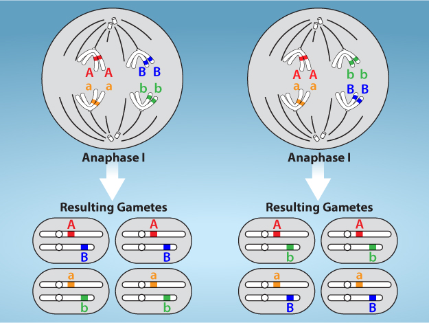
In anaphase I, the spindle fibers pull the linked chromosomes apart. The sister chromatids remain tightly bound together at the centromere. It is the chiasma connections that are broken in anaphase I as the fibers attached to the fused kinetochores pull the homologous chromosomes apart (Figure 7.5).
In telophase I, the separated chromosomes arrive at opposite poles. The remainder of the typical telophase events may or may not occur depending on the species. In some organisms, the chromosomes decondense and nuclear envelopes form around the chromatids in telophase I.
Cytokinesis, the physical separation of the cytoplasmic components into two daughter cells, occurs without reformation of the nuclei in other organisms. In nearly all species, cytokinesis separates the cell contents by either a cleavage furrow (in animals and some fungi), or a cell plate that will ultimately lead to formation of cell walls that separate the two daughter cells (in plants). At each pole, there is just one member of each pair of the homologous chromosomes, so only one full set of the chromosomes is present. This is why the cells are considered haploid—there is only one chromosome set, even though there are duplicate copies of the set because each homolog still consists of two sister chromatids that are still attached to each other. However, although the sister chromatids were once duplicates of the same chromosome, they are no longer identical at this stage because of crossovers.
Explain the two mechanisms that generate genetic variation during meiosis I: crossing over and independent assortment.
- Describe cellular events during meiosis II
- Explain the differences between meiosis and mitosis
In meiosis II, the connected sister chromatids remaining in the haploid cells from meiosis I will be split to form four haploid cells. In some species, cells enter a brief interphase, or interkinesis, that lacks an S phase, before entering meiosis II. Chromosomes are not duplicated during interkinesis. The two cells produced in meiosis I go through the events of meiosis II in synchrony. Overall, meiosis II resembles the mitotic division of a haploid cell.
In prophase II, if the chromosomes decondensed in telophase I, they condense again. If nuclear envelopes were formed, they fragment into vesicles. The centrosomes duplicated during interkinesis move away from each other toward opposite poles, and new spindles are formed. In prometaphase II, the nuclear envelopes are completely broken down, and the spindle is fully formed. Each sister chromatid forms an individual kinetochore that attaches to microtubules from opposite poles. In metaphase II, the sister chromatids are maximally condensed and aligned at the center of the cell. In anaphase II, the sister chromatids are pulled apart by the spindle fibers and move toward opposite poles.
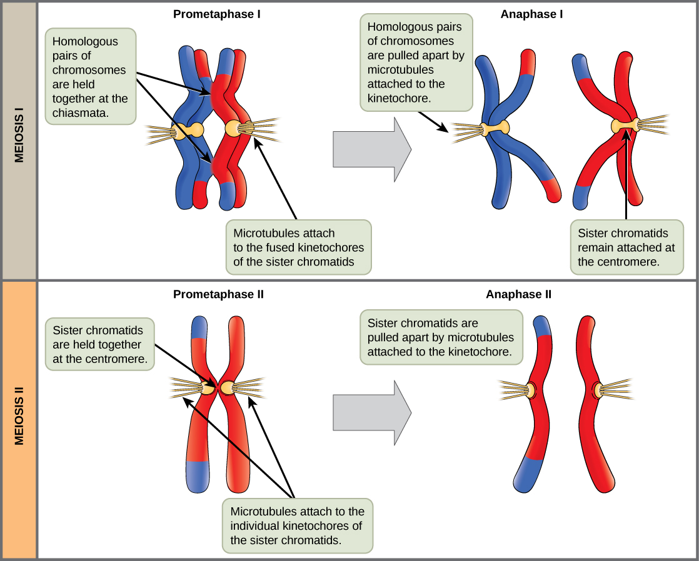
In telophase II, the chromosomes arrive at opposite poles and begin to decondense. Nuclear envelopes form around the chromosomes. Cytokinesis separates the two cells into four genetically unique haploid cells. At this point, the nuclei in the newly produced cells are both haploid and have only one copy of the single set of chromosomes. The cells produced are genetically unique because of the random assortment of paternal and maternal homologs and because of the recombination of maternal and paternal segments of chromosomes—with their sets of genes—that occurs during crossover.
Mitosis and meiosis, which are both forms of division of the nucleus in eukaryotic cells, share some similarities, but also exhibit distinct differences that lead to their very different outcomes. Mitosis is a single nuclear division that results in two nuclei, usually partitioned into two new cells. The nuclei resulting from a mitotic division are genetically identical to the original. They have the same number of sets of chromosomes: one in the case of haploid cells, and two in the case of diploid cells. On the other hand, meiosis is two nuclear divisions that result in four nuclei, usually partitioned into four new cells. The nuclei resulting from meiosis are never genetically identical, and they contain one chromosome set only—this is half the number of the original cell, which was diploid (Figure 7.6).
The differences in the outcomes of meiosis and mitosis occur because of differences in the behavior of the chromosomes during each process. Most of these differences in the processes occur in meiosis I, which is a very different nuclear division than mitosis. In meiosis I, the homologous chromosome pairs become associated with each other, are bound together, experience chiasmata and crossover between sister chromatids, and line up along the metaphase plate in tetrads with spindle fibers from opposite spindle poles attached to each kinetochore of a homolog in a tetrad. All of these events occur only in meiosis I, never in mitosis.
Homologous chromosomes move to opposite poles during meiosis I so the number of sets of chromosomes in each nucleus-to-be is reduced from two to one. For this reason, meiosis I is referred to as a reduction division. There is no such reduction in ploidy level in mitosis.
Meiosis II is much more analogous to a mitotic division. In this case, duplicated chromosomes (only one set of them) line up at the center of the cell with divided kinetochores attached to spindle fibers from opposite poles. During anaphase II, as in mitotic anaphase, the kinetochores divide and one sister chromatid is pulled to one pole and the other sister chromatid is pulled to the other pole. If it were not for the fact that there had been crossovers, the two products of each meiosis II division would be identical as in mitosis; instead, they are different because there has always been at least one crossover per chromosome. Meiosis II is not a reduction division because, although there are fewer copies of the genome in the resulting cells, there is still one set of chromosomes, as there was at the end of meiosis I.
Cells produced by mitosis will function in different parts of the body as a part of growth or replacing dead or damaged cells. They may even be involved in asexual reproduction in some organisms. Cells produced by meiosis in a diploid-dominant organism such as an animal will only participate in sexual reproduction.
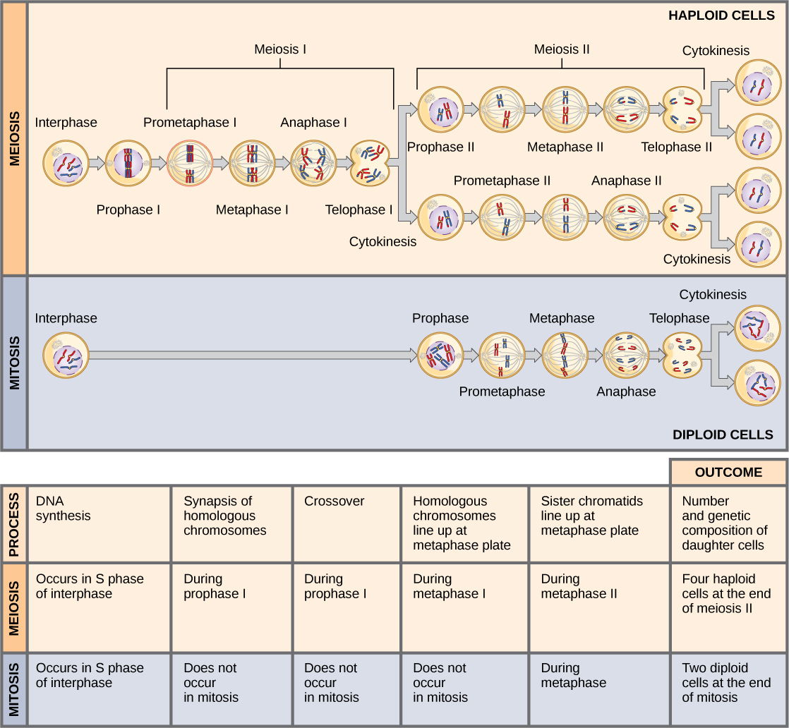
Compare and contrast meiosis and mitosis. What are the key differences in process and outcome? Why is meiosis I called a 'reduction division' while meiosis II is not?
- Explain how nondisjunction leads to differences in chromosome number
- Describe how errors in chromosome structure occur
Inherited disorders can arise when chromosomes behave abnormally during meiosis. Chromosome disorders can be divided into two categories: abnormalities in chromosome number and chromosome structural rearrangements. Because even small segments of chromosomes can span many genes, chromosomal disorders are characteristically dramatic and often fatal.
The isolation and microscopic observation of chromosomes forms the basis of cytogenetics and is the primary method by which clinicians detect chromosomal abnormalities in humans. A karyotype is the number and appearance of chromosomes, including their length, banding pattern, and centromere position. To obtain a view of an individual's karyotype, cytologists photograph the chromosomes and then cut and paste each chromosome into a chart, or karyogram (Figure 7.7).
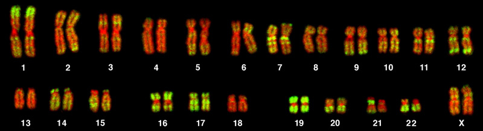
The karyotype is a method by which traits characterized by chromosomal abnormalities can be identified from a single cell. To observe an individual's karyotype, a person's cells (like white blood cells) are first collected from a blood sample or other tissue. In the laboratory, the isolated cells are stimulated to begin actively dividing. A chemical is then applied to the cells to arrest mitosis during metaphase. The cells are then fixed to a slide.
The geneticist then stains chromosomes with one of several dyes to better visualize the distinct and reproducible banding patterns of each chromosome pair. Following staining, chromosomes are viewed using bright-field microscopy. An experienced cytogeneticist can identify each band. In addition to the banding patterns, chromosomes are further identified on the basis of size and centromere location. To obtain the classic depiction of the karyotype in which homologous pairs of chromosomes are aligned in numerical order from longest to shortest, the geneticist obtains a digital image, identifies each chromosome, and manually arranges the chromosomes into this pattern (Figure 7.7).
At its most basic, the karyogram may reveal genetic abnormalities in which an individual has too many or too few chromosomes per cell. Examples of this are Down syndrome, which is identified by a third copy of chromosome 21, and Turner syndrome, which is characterized by the presence of only one X chromosome in women instead of two. Geneticists can also identify large deletions or insertions of DNA. For instance, Jacobsen syndrome, which involves distinctive facial features as well as heart and bleeding defects, is identified by a deletion on chromosome 11. Finally, the karyotype can pinpoint translocations, which occur when a segment of genetic material breaks from one chromosome and reattaches to another chromosome or to a different part of the same chromosome. Translocations are implicated in certain cancers, including chronic myelogenous leukemia.
By observing a karyogram, geneticists can actually visualize the chromosomal composition of an individual to confirm or predict genetic abnormalities in offspring even before birth.
Of all the chromosomal disorders, abnormalities in chromosome number are the most easily identifiable from a karyogram. Disorders of chromosome number include the duplication or loss of entire chromosomes, as well as changes in the number of complete sets of chromosomes. They are caused by nondisjunction, which occurs when pairs of homologous chromosomes or sister chromatids fail to separate during meiosis. The risk of nondisjunction increases with the age of the parents.
Nondisjunction can occur during either meiosis I or II, with different results (Figure 7.8). If homologous chromosomes fail to separate during meiosis I, the result is two gametes that lack that chromosome and two gametes with two copies of the chromosome. If sister chromatids fail to separate during meiosis II, the result is one gamete that lacks that chromosome, two normal gametes with one copy of the chromosome, and one gamete with two copies of the chromosome.
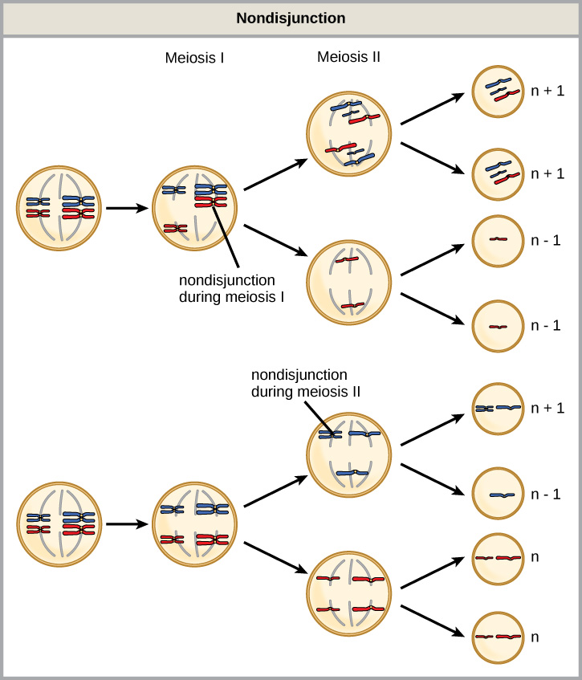
An individual with the appropriate number of chromosomes for their species is called euploid; in humans, euploidy corresponds to 22 pairs of autosomes and one pair of sex chromosomes. An individual with an error in chromosome number is described as aneuploid, a term that includes monosomy (loss of one chromosome) or trisomy (gain of an extraneous chromosome). Monosomic human zygotes missing any one copy of an autosome invariably fail to develop to birth because they have only one copy of essential genes. Most autosomal trisomies also fail to develop to birth; however, duplications of some of the smaller chromosomes (13, 15, 18, 21, or 22) can result in offspring that survive for several weeks to many years. Trisomic individuals suffer from a different type of genetic imbalance: an excess in gene dose. Cell functions are calibrated to the amount of gene product produced by two copies (doses) of each gene; adding a third copy (dose) disrupts this balance. The most common trisomy is that of chromosome 21, which leads to Down syndrome. Individuals with this inherited disorder have characteristic physical features and developmental delays in growth and cognition. The incidence of Down syndrome is correlated with maternal age, such that older women are more likely to give birth to children with Down syndrome (Figure 7.9).
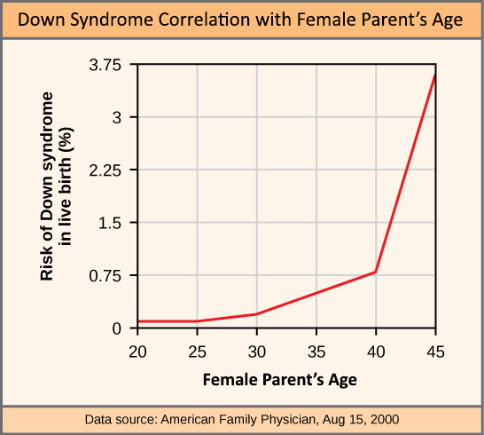
Humans display dramatic deleterious effects with autosomal trisomies and monosomies. Therefore, it may seem counterintuitive that human females and males can function, despite carrying different numbers of the X chromosome. In part, this occurs because of a process called X inactivation. Early in development, when female mammalian embryos consist of just a few thousand cells, one X chromosome in each cell inactivates by condensing into a structure called a Barr body. The genes on the inactive X chromosome are not expressed. The particular X chromosome that is inactivated in each cell is random, but once the inactivation occurs, all cells descended from that cell will have the same inactive X chromosome. By this process, females compensate for their double genetic dose of X chromosome.
In so-called "tortoiseshell" cats, X inactivation is observed as coat-color variegation (Figure 7.10). Females heterozygous for an X-linked coat color gene will express one of two different coat colors over different regions of their body, corresponding to whichever X chromosome is inactivated in the embryonic cell progenitor of that region. When you see a tortoiseshell cat, you will know that it has to be a female.
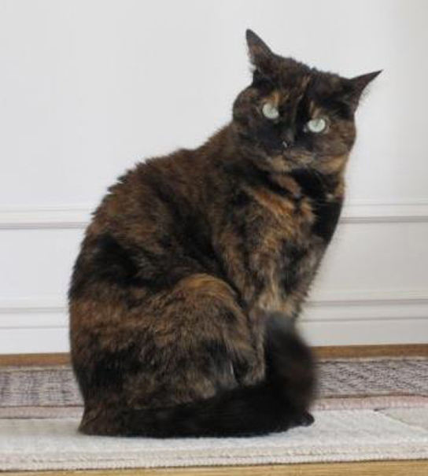
In an individual carrying an abnormal number of X chromosomes, cellular mechanisms will inactivate all but one X in each cell. As a result, X-chromosomal abnormalities are typically associated with mild intellectual and physical disabilities, as well as sterility. If the X chromosome is absent altogether, the individual will not develop.
Several errors in sex chromosome number have been characterized. Individuals with three X chromosomes, called triplo-X, are assigned female but express developmental delays and reduced fertility. The XXY chromosome complement, corresponding to one type of Klinefelter syndrome, corresponds to male individuals with small testes, enlarged breasts, and reduced body hair. The extra X chromosome undergoes inactivation to compensate for the excess genetic dosage. Turner syndrome, characterized as an X0 chromosome complement (i.e., only a single sex chromosome), corresponds to a female individual with short stature, webbed skin in the neck region, hearing and cardiac impairments, and sterility.
An individual with more than the correct number of chromosome sets (two for diploid species) is called polyploid. For instance, fertilization of an abnormal diploid egg with a normal haploid sperm would yield a triploid zygote. Polyploid animals are extremely rare, with only a few examples among the flatworms, crustaceans, amphibians, fish, and lizards. Triploid animals are sterile because meiosis cannot proceed normally with an odd number of chromosome sets. In contrast, polyploidy is very common in the plant kingdom, and polyploid plants tend to be larger and more robust than euploids of their species.
Cytologists have characterized numerous structural rearrangements in chromosomes, including partial duplications, deletions, inversions, and translocations. Duplications and deletions often produce offspring that survive but exhibit physical and mental abnormalities. Cri-du-chat (from the French for "cry of the cat") is a syndrome associated with nervous system abnormalities and identifiable physical features that results from a deletion of most of the small arm of chromosome 5 (Figure 7.11). Infants with this genotype emit a characteristic high-pitched cry upon which the disorder's name is based.
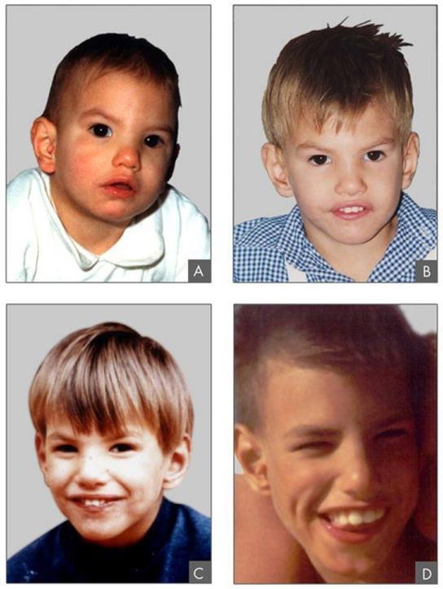
Chromosome inversions and translocations can be identified by observing cells during meiosis because homologous chromosomes with a rearrangement in one of the pair must contort to maintain appropriate gene alignment and pair effectively during prophase I.
A chromosome inversion is the detachment, 180° rotation, and reinsertion of part of a chromosome (Figure 7.12). Unless they disrupt a gene sequence, inversions only change the orientation of genes and are likely to have more mild effects than aneuploid errors.
Not all structural rearrangements of chromosomes produce nonviable, impaired, or infertile individuals. In rare instances, such a change can result in the evolution of a new species. In fact, an inversion in chromosome 18 appears to have contributed to the evolution of humans. This inversion is not present in our closest genetic relatives, the chimpanzees.
The chromosome 18 inversion is believed to have occurred in early humans following their divergence from a common ancestor with chimpanzees approximately five million years ago. Researchers have suggested that a long stretch of DNA was duplicated on chromosome 18 of an ancestor to humans, but that during the duplication it was inverted (inserted into the chromosome in reverse orientation.
A comparison of human and chimpanzee genes in the region of this inversion indicates that two genes—ROCK1 and USP14—are farther apart on human chromosome 18 than they are on the corresponding chimpanzee chromosome. This suggests that one of the inversion breakpoints occurred between these two genes. Interestingly, humans and chimpanzees express USP14 at distinct levels in specific cell types, including cortical cells and fibroblasts. Perhaps the chromosome 18 inversion in an ancestral human repositioned specific genes and reset their expression levels in a useful way. Because both ROCK1 and USP14 code for enzymes, a change in their expression could alter cellular function. It is not known how this inversion contributed to hominid evolution, but it appears to be a significant factor in the divergence of humans from other primates.
A translocation occurs when a segment of a chromosome dissociates and reattaches to a different, nonhomologous chromosome. Translocations can be benign or have devastating effects, depending on how the positions of genes are altered with respect to regulatory sequences. Notably, specific translocations have been associated with several cancers and with schizophrenia. Reciprocal translocations result from the exchange of chromosome segments between two nonhomologous chromosomes such that there is no gain or loss of genetic information (Figure 7.12).
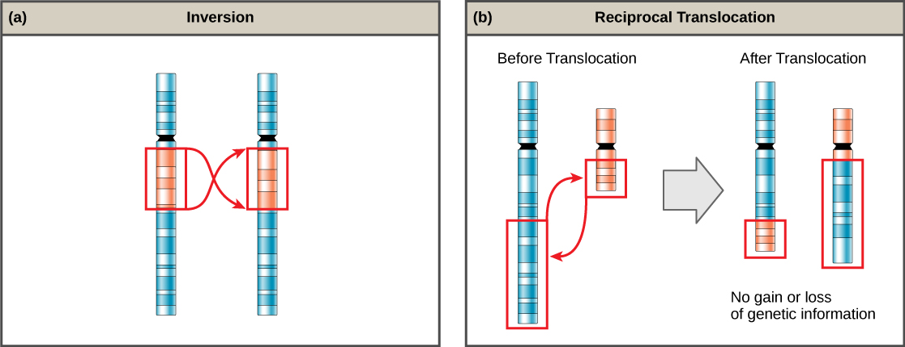
Explain what nondisjunction is and how it can lead to conditions like Down syndrome and Turner syndrome. Also describe what X inactivation is and why tortoiseshell cats are always female.
- Sexual reproduction and its evolutionary advantages — CB 7.1
- The Red Queen hypothesis and three life-cycle types — CB 7.1
- Meiosis I stages and processes (synapsis, crossing over) — CB 7.2
- Meiosis II and comparison with mitosis — CB 7.2
- Disorders in chromosome number and structure — CB 7.3